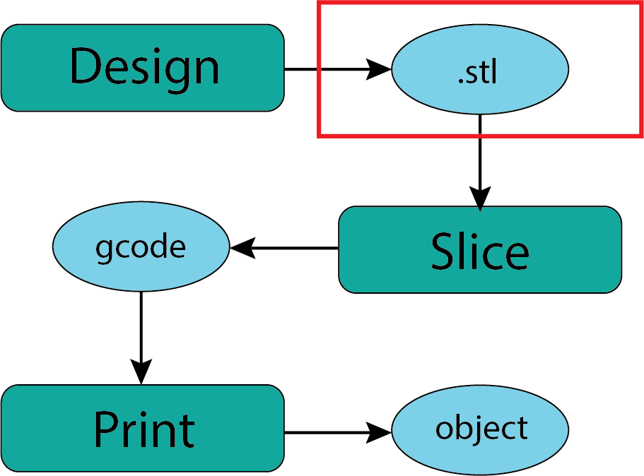
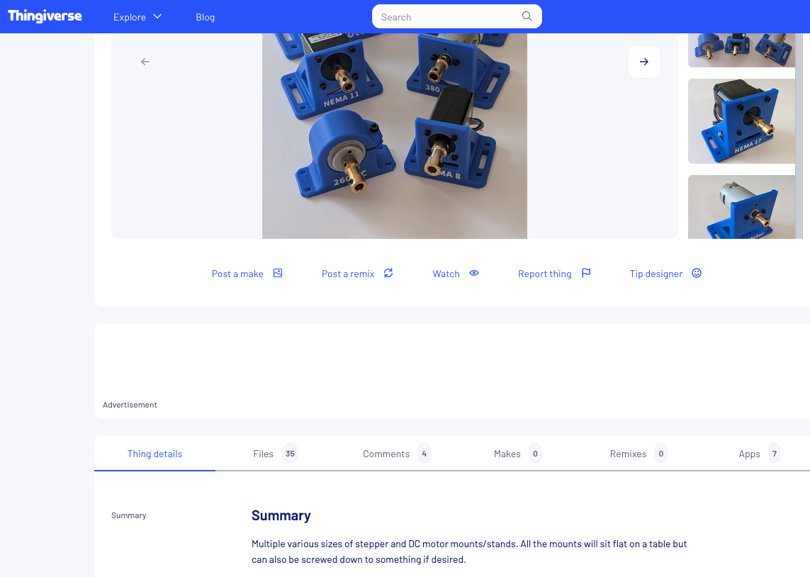
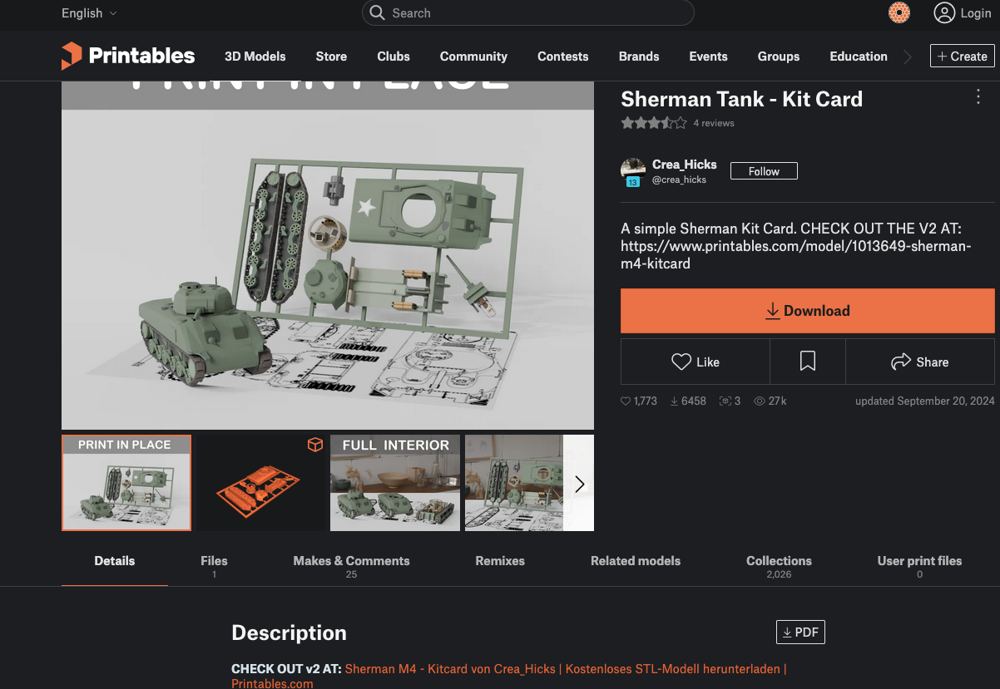
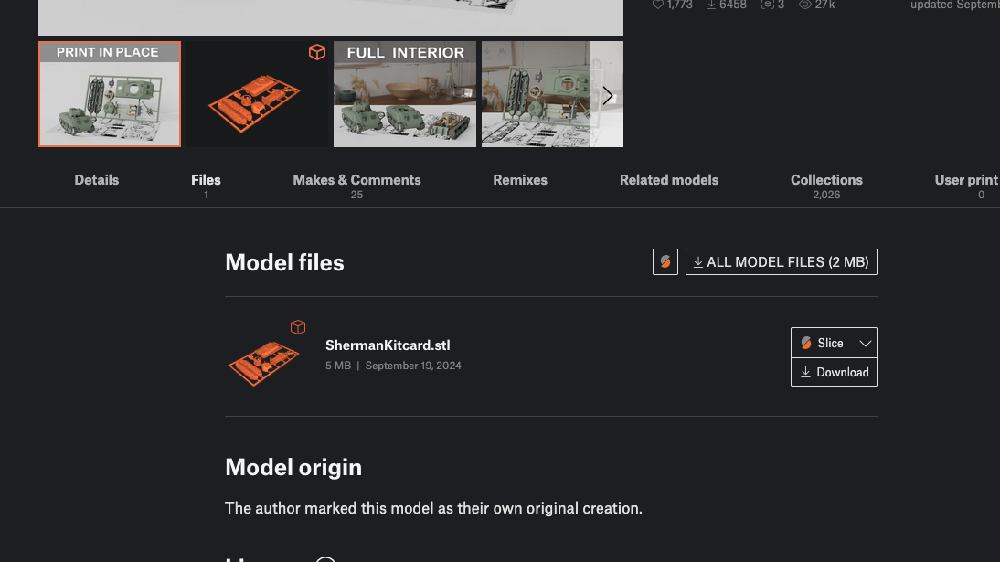
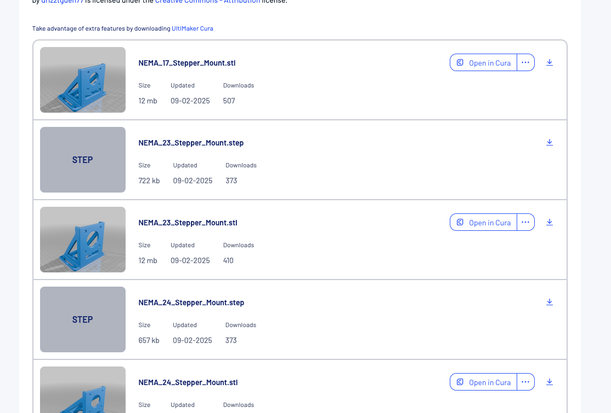
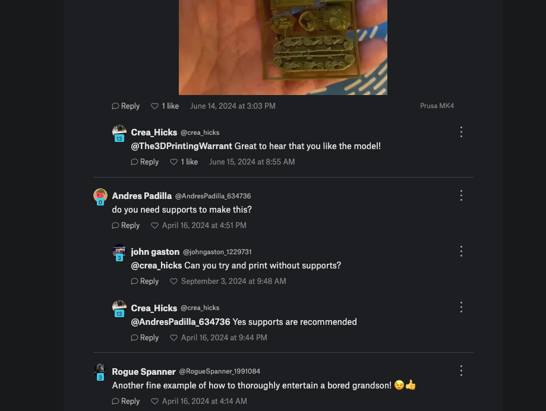
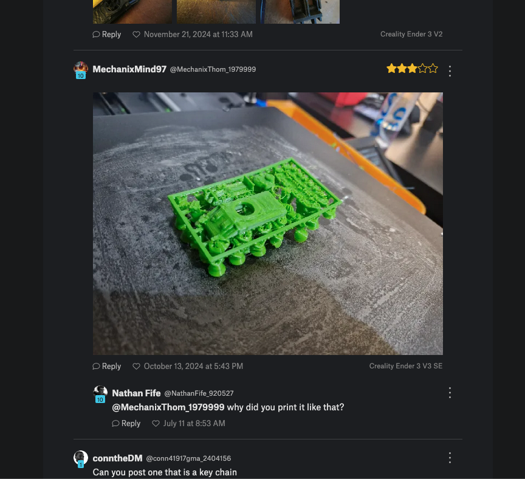
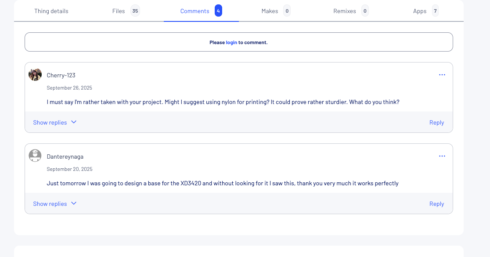

Downloading Printable Files#
{kind=link}

Fig. 11 Downloading .stl Files#
There is a vibrant community of people who work with 3D printers that is typically generous with their designs and insights. You can see this from the seemingly endless YouTube videos out there. For those of us new to the 3D printing world a great entry point is to download one of these shared designs to print. All that is generally asked of you is to acknowledge the designer anytime you show someone your print.
Where to find files?#
It is my sense in looking through the various sharing sites that I frequent that many printable objects show up on all the sites. I will introduce you to the ones that have been most useful to me but you may find sites dedicated to objects that are of specific interest to you. The process will be generally the same.
Thingiverse#
I feel like thingiverse was one of the first large sharing sites that I became aware of. We will go and take a look to get a sense of what’s out there.
Printables#
Once I started working with Prusa products I found that the Printables community is also a great place to find interesting and useful things to print.
These are the two that I have explored most but there are many others. Be aware that there is a growing tendency to charge for designs which is slightly antithetical to the origins of the movement but mostly the costs are small and reasonable for the effort the designer has put out.
What is the Process?#
Navigate to the object page which will look something like those below. You’ll notice that the format is pretty consistent across almost all platforms. There is a description, a link to the relevant files, comments from folks who have printed this file, and other related objects and files.
Generall valuable to take the time to read the description provided by the creator. This often has suggestions for printer settings, materials, and applications. This description combined with any relevant comments helps me decide if this is a model I wish to download/print.
Object Page:
{kind=link}

Fig. 12 Thingiverse Object#
{kind=link}

Fig. 13 Printables Object#
Files Page:
For the Printables object there is just a single file for the entire object. It is nice in this case since it keeps the parts together. In some cases it’s challenging if you want to only print some parts as opposed to the whole thing.
{kind=link}

Fig. 14 Printables File#
The Thingiverse object has a different file structure because most people will want to choose the motor mount that matches their specific need. There are a lot of files here but you’re most likely to only pick one to download.
{kind=link}

Fig. 15 Thingiverse Files#
You will notice there are two different types of files listed. The .stl file is the one you want for printing. The .step file is a form of CAD file which you could import into your own CAD software (probably) if you needed or wanted to redesign some aspect of the model. Generous of drizztguen77!
Comments:
Before I download a file for a particular object I generally read the comments that other people have left. This is a great way to be alerted to considerations with the print. In this case one of the comments/questions was about the need for supports while printing (we will discuss shortly). Very handy information.
{kind=link}

Fig. 16 Printables Comment#
Sometimes you just get some insights into unexpected things that other people do. It appears this user printed the object upside down which didn’t work out well. Probably not as silly as it looks since I can think of some ways this might happen if you weren’t paying attention.
{kind=link}

Fig. 17 Printables Comment#
The comments on the Thingiverse page are more innocuous but still helpful in evaluating the potential for this model as well as other material options.
{kind=link}

Fig. 18 Thingiverse Comments#
Download the .stl:
When you have decided what you want to print then simply download the .stl file to your personal computer. I’m assuming you know where to find that downloaded file for the next stage of our workflow.
Other File Types:
You will encounter a variety of other file types that creators post. In the begining the general recommendation is to only download the .stl file until you have more experience. As you gain experience you will recognize different file types when they might be useful for you.